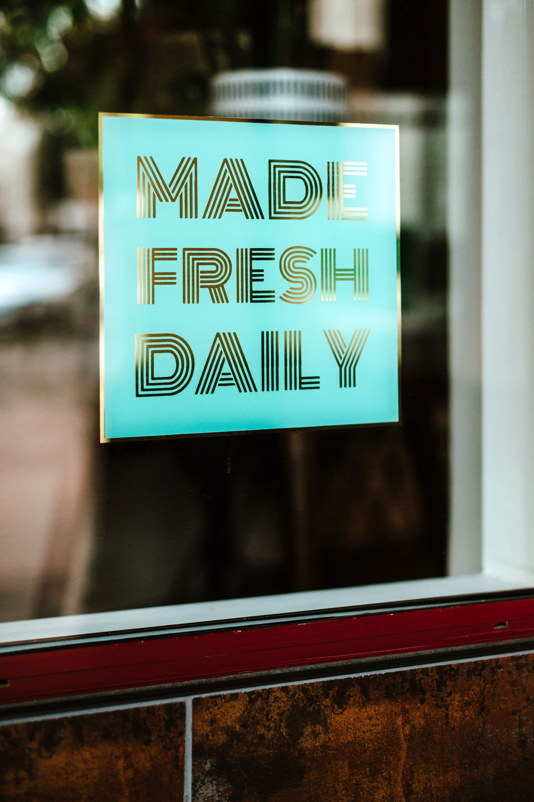
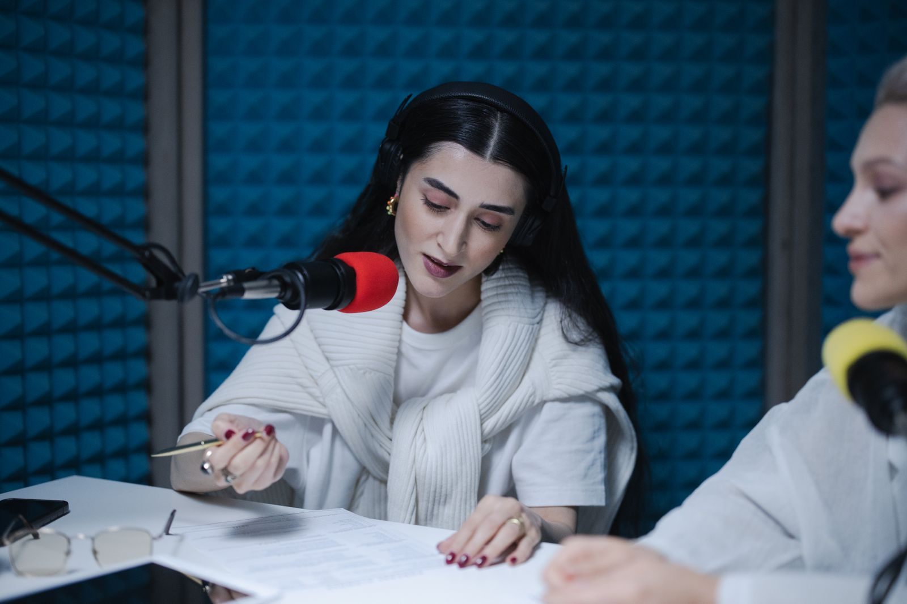
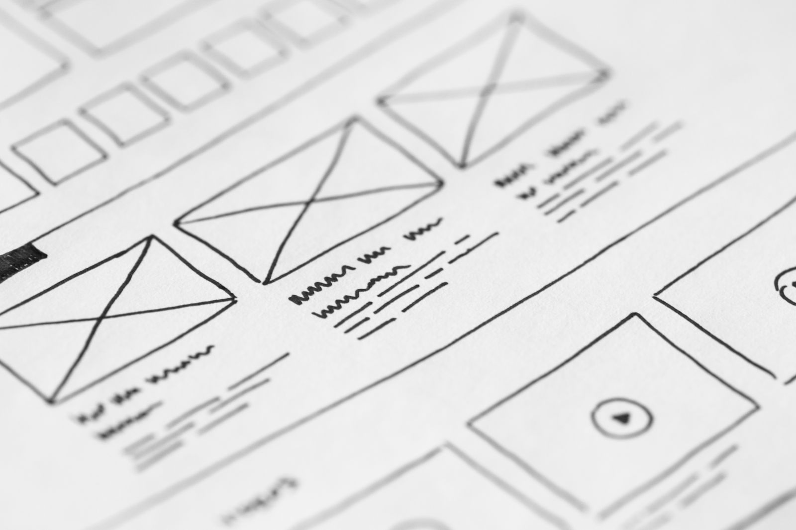
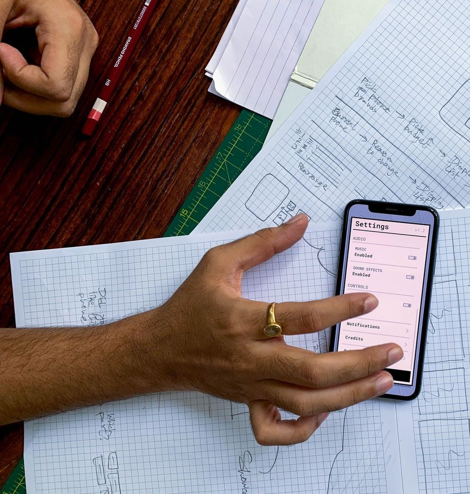
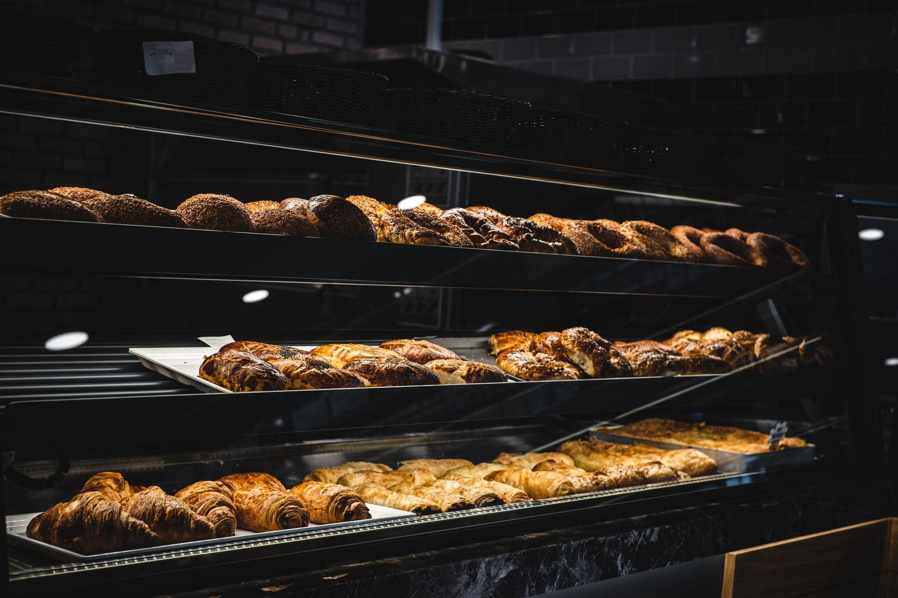
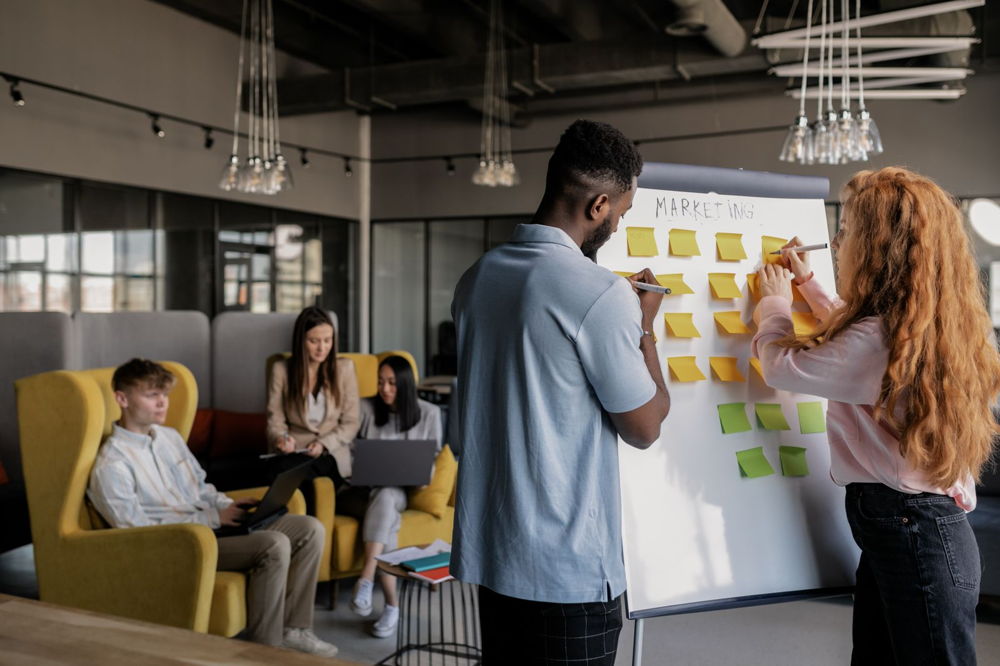

Km 01 · Op straat
Gevel en signalisatie
De gevel is je eerste indruk op straat. We ontwerpen uithangborden, raamfolie en signalisatie en regelen de plaatsing met onze partners.
Marketingbureau · online en offline
Zichtbaar Media is een full-service marketingbureau voor Belgische kmo's en lokale zaken. Online én offline, met één plan en één aanspreekpunt.

Km 01 · Op straat
De gevel is je eerste indruk op straat. We ontwerpen uithangborden, raamfolie en signalisatie en regelen de plaatsing met onze partners.

Km 02 · Op straat
Een bestelwagen is bewegende reclame. Samen met onze partners zorgen we voor belettering en voor affiches of panelen waar jouw klanten passeren.

Km 03 · Op straat
Wat je klant kan vasthouden blijft hangen. We ontwerpen drukwerk dat past bij je huisstijl en regelen de druk met onze partners. Je ziet een proef vóór er iets gedrukt wordt.

Km 04 · Op straat
Een korte radiospot of een goed geschreven bericht kan veel mensen tegelijk bereiken. We schrijven de tekst en regelen de uitvoering met onze partners.

Km 05 · Op straat
Een beurs of opening is een moment waarop alles samenkomt. We ontwerpen de stand en het materiaal, bereiden de uitnodigingen voor en volgen na het evenement op.

Km 06 · Op het scherm
Je website is vaak het eerste wat een klant van je ziet. We ontwerpen en bouwen een site die duidelijk zegt wat je doet, snel is en makkelijk contact mogelijk maakt. Verkoop je producten, dan bouwen we ook een webshop.

Km 07 · Op het scherm
Mensen zoeken eerst op hun gsm. Met zoekmachine-optimalisatie, een goed Google-bedrijfsprofiel en betaalde advertenties zorgen we dat je zichtbaar bent bij de juiste zoekopdrachten in jouw buurt of sector.

Km 08 · Op het scherm
Regelmatig en herkenbaar verschijnen werkt beter dan af en toe veel posten. We maken een kalender, schrijven en ontwerpen de berichten en volgen reacties op.

Km 09 · Op het scherm
Echte foto's van je zaak, je werk en je mensen overtuigen meer dan stockbeelden. We regelen opnames met een vaste partner en gebruiken het beeld overal waar het past.

Km 10 · Op het scherm
Een marketingplan begint met een heldere vraag: wie wil je bereiken en waarom zouden ze voor jou kiezen? We zetten dat op één blad, met doelen, kanalen en een kalender. Daar volgt de rest uit, zodat gevel, drukwerk, site en advertenties hetzelfde vertellen.
Gevel, drukwerk, site en advertentie op één kalender, zodat alles hetzelfde vertelt.
Eén persoon bij ons praat met drukker, plaatser en adverteerder. Jij hoeft dat niet te doen.
Wie je wagen ziet en daarna je site opent, herkent dezelfde zaak.
Route
We luisteren en kijken naar wat je nu al doet, online en op papier en aan de gevel. We zeggen eerlijk wat we zouden laten liggen.
Van jou: een uur en je bestaande materiaal.
Doelen, kanalen, budget en kalender naast elkaar, zodat je ziet hoe bestelwagen, site en advertentie op elkaar aansluiten.
Van jou: een keuze en een akkoord.
Eén contactpersoon bij ons regelt het werk met drukker, plaatser en adverteerder. Je ziet proeven vóór er iets gedrukt of gepubliceerd wordt.
Van jou: proeven nakijken.
Elke maand een korte balans van wat het opleverde en wat we daarom anders doen.
Van jou: een kort gesprek.
Zo pakken we het aan
Geen afgeronde opdrachten, maar zo zouden we het aanpakken. Echte cases volgen zodra klanten toestemming geven.

Een buurtbakkerij wil bekend raken in de volgende wijk, zonder de eigen toon te verliezen.
Bekijk het scenario
Veel omzet in enkele drukke weken, daarbuiten rustig. Het doel: vaste klanten die vaker terugkomen.
Bekijk het scenario
Veel werk in de winter, minder in de zomer, en moeilijk aan nieuwe collega's geraken.
Bekijk het scenarioVoor wie
Veelgestelde vragen
Dat hangt af van wat je nodig hebt. Na een eerste gesprek maken we een voorstel met wat erin zit en wat het kost, zodat je kan kiezen.
Nee. Je neemt wat je nodig hebt. Wat je neemt, sluit wel op elkaar aan: dezelfde kleuren, dezelfde woorden, dezelfde afspraken.
Eén persoon bij ons. Die praat met drukker, plaatser, adverteerder en fotograaf, zodat jij dat niet hoeft te doen.
Wij ontwerpen en coördineren. Druk, plaatsing en andere productie gebeuren met onze partners. Jij hebt één aanspreekpunt.
Ja, dat kan. We zeggen er wel bij wat ontbreekt als je klanten je ook op straat of op papier tegenkomen.